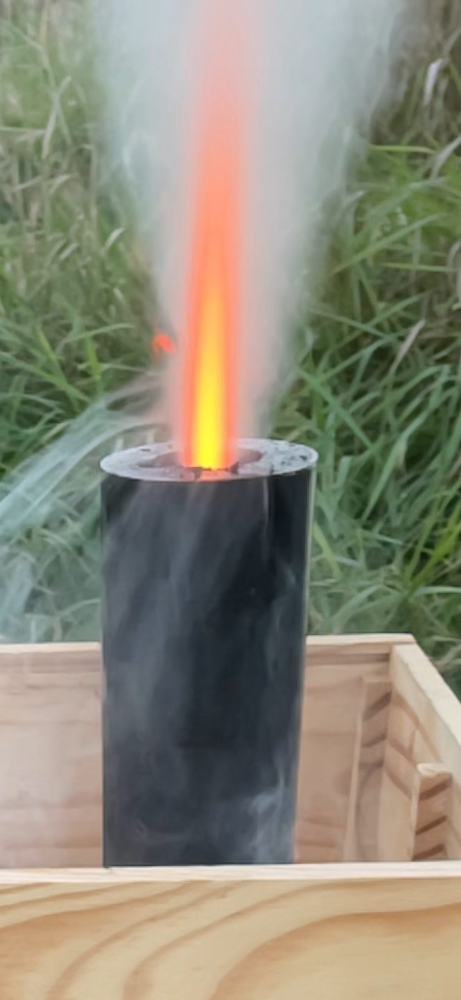

Page de garde de TECHNOLOGIE (Expériences)
Voici un moteur de fusée que j'ai fabriqué moi-même, imprimé en PLA avec du Rocket Candy (propergol pour fusée amateur) :

Le voici en fonctionnement :
Voici une Dagoma DiscoEasy 200 que j'ai pu récupérer dans un FabLab pour la rénover :

Voici l'imprimante rénovée, j'ai supprimé tous les jeux qu'il y avait dans les axes, j'ai installé un plateau chauffant et installé Klipper :

La première couche est aussi parfaite que sur ma Bambulab P1S grâce au BLTouch :

Voici ma petite fraiseuse CNC que j'ai construite, elle est imprimée en 3D. C'est la conception du Youtubeur Nikodem Bartnik :

Voici mon atelier, c'est ici que je fabrique tous mes robots que je modifie mes imprimantes etc... :

Voici mon petit coin impression 3D :